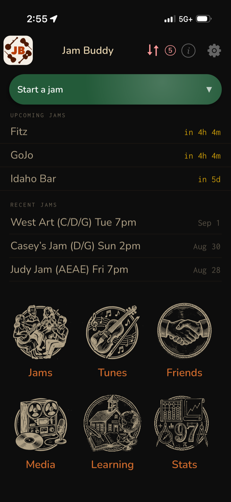
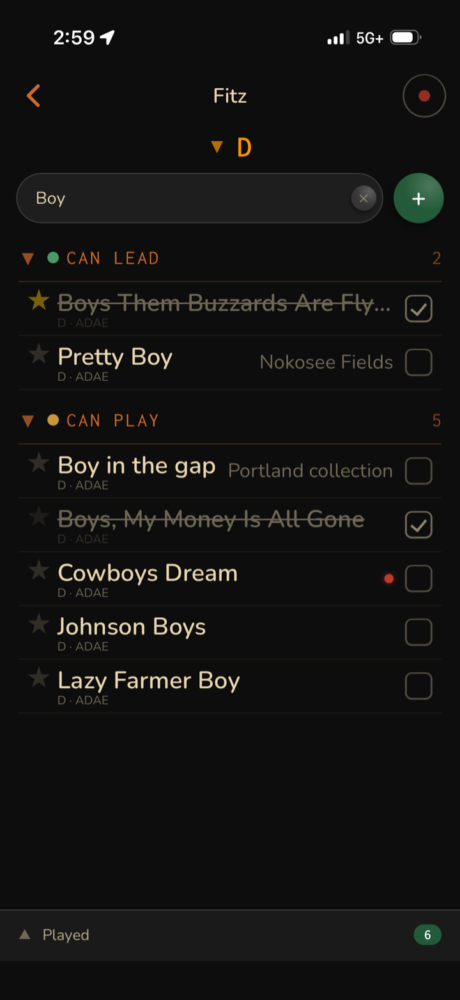

Helping you out in a jam. Jam Buddy is the phone-sized companion for old-time and fiddle jams — it knows which jams are coming up, which tunes you can lead versus follow, and what actually got played once the night is over.
What it does
-
Your jams, upcoming and past
Recurring sessions and one-offs live side by side, with a countdown to the next one and a record of the last ones — each with its key and tuning right in the title.
-
The right tune list, on the spot
Filter to the jam's key and tuning, then search. Tunes group by whether you can lead them or just play them, so you know what you can call when it's your turn.
-
Check them off as they go by
Tap a tune as it's played and it strikes through and drops into the played count — so at the end of the night you have a real set list, not a memory.
-
Record straight from the jam
Hit record without leaving the tune list. Takes land against the jam and the tune, ready to review at home.
-
Friends, learning, and stats
Track who you play with, what you're currently learning, and how your repertoire is growing over time.
A look at it


Part of the tune-sync family
Jam Buddy is one of the tune-sync apps. Point it at the same shared folder in your cloud drive as Tune Hub, Timeliner, and Practice Buddy, and your tunes, recordings, and practice data flow between them — nothing is stored on our servers.
Sync looking stuck? See Cloud Sync Tips.